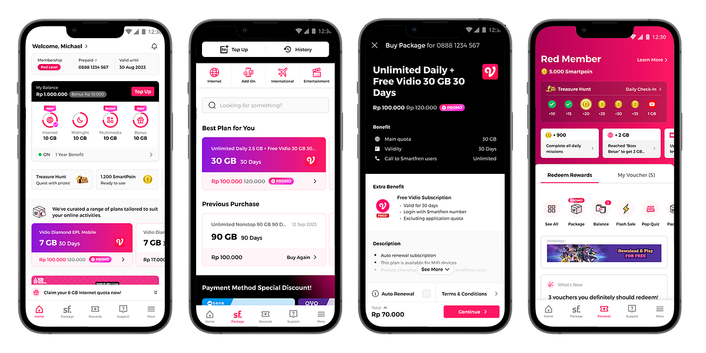
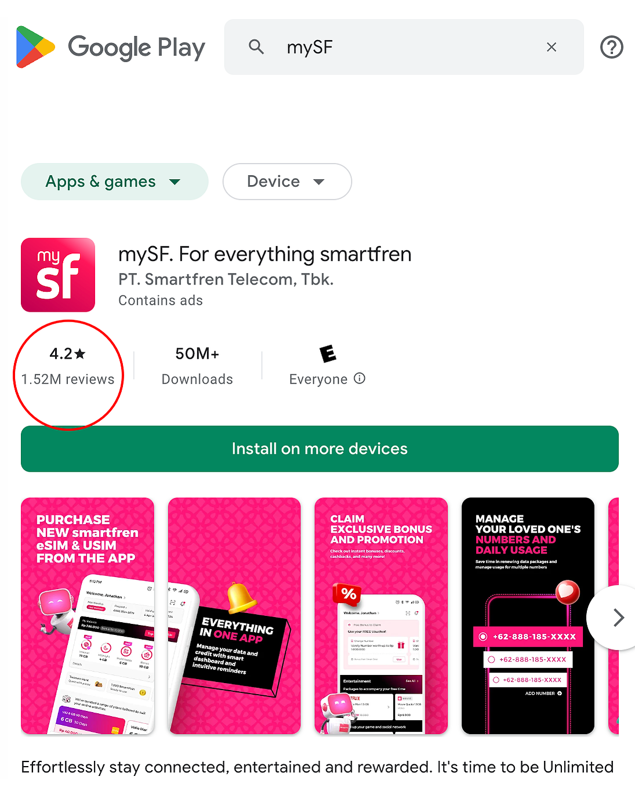

mySF — Telco Mobile/Web Applications & SME Commerce Platform
Super-app for Indonesia's largest telecom provider, integrating telecom packages, top-up, rewards, vouchers, and customer care.
Overview
mySF integrates telecom package purchase, Top Up, rewards, vouchers, and customer care into a single super-app. Joined as Chief of Digital Product in 2020, leading business concept, branding, and end-to-end UX design.
Designed a dedicated Light Mode optimized for low-spec devices — a critical consideration for the Indonesian market. A GenAI-powered customer care chatbot is currently in development.
Design System
Built on Atomic Design methodology: Atom → Molecule → Organism → Template → Page. A Figma token-based system manages dark, light, and light (low-spec) modes consistently across all surfaces.
Key Features
- Telecom package purchase — simplified 3-step flow
- Top Up (prepaid) & automatic recharge settings
- Rewards points & voucher marketplace
- Customer care · FAQ · live chat integration
- Light Mode — optimized for low-spec devices
- GenAI Customer Care Chatbot (in progress)


Previous
—
Next
Dalligent — KUPU →